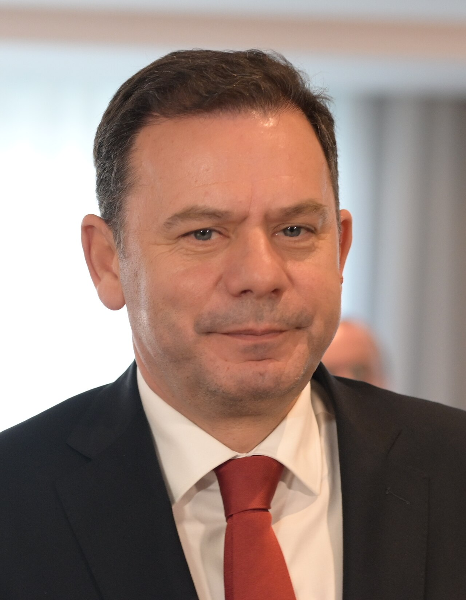
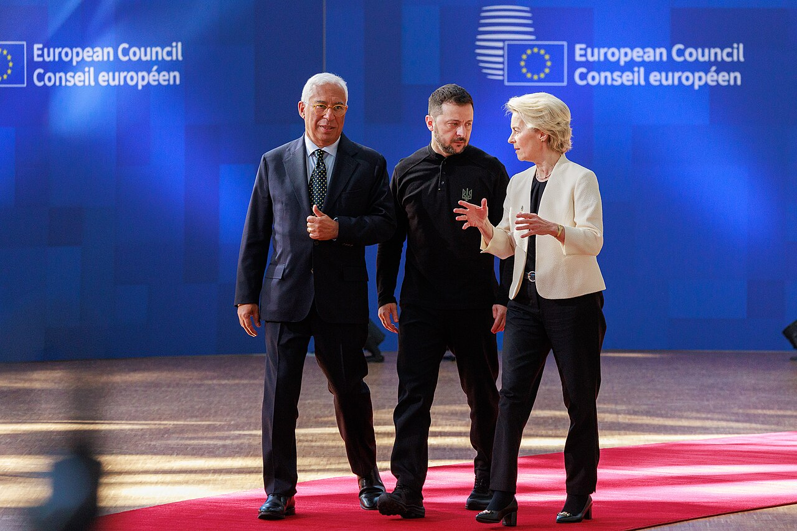
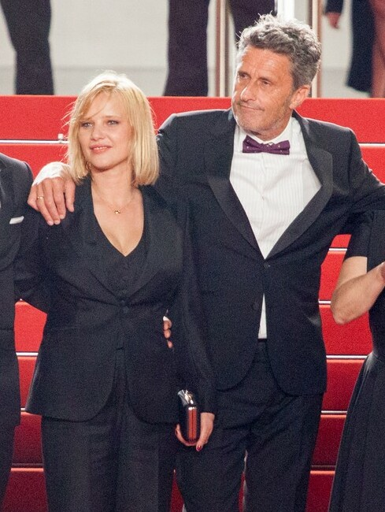
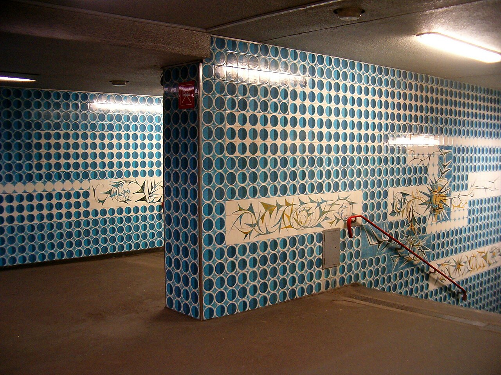
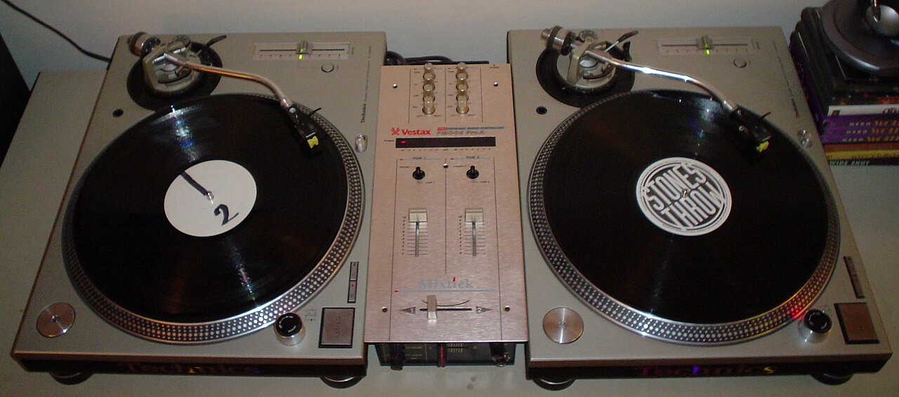

Montenegro said on RTP that the Government will not apply zero VAT on food, the end of the lower IRS (income tax) rate on moderate rents or the permanent pensions bonus, all approved by the opposition in the Budget. Read →
The EU's 27 leaders begin an extraordinary summit in Brussels today on the European budget for 2028–2034; almost nobody expects an agreement this week. Read →
FinCEN, the US Treasury agency that receives money-laundering alerts, has confirmed an intrusion into its systems; it is not known what data was affected or who carried out the attack. Read →
The US is proposing new tariffs on 14 trading partners, including the EU, which rejects the accusation of overproduction; according to Reuters, they are not expected to take effect before January. Read →
The first close-up images from the European probe Hera show that the asteroid Dimorphos, hit by NASA in 2022, was left with a crater much bigger than expected. Read →
The CP train drivers' strike is partial today and ends at 24:00 on Friday; on Friday, Porto Metro is also on strike and runs on only two routes. Read →
What to watch
Thursday and Friday, 26–27 NovExtraordinary European Council summit in Brussels on the EU budget for 2028–2034; the aim is an agreement at the 17–18 December summit. Read →
Friday 27 NovStrike on Porto Metro, with service only on the shared Senhora da Hora–Estádio do Dragão section and on the Yellow line; the strike notice for CP train drivers ends at 24:00. Read →
Tuesday 1 DecDate set for the auction of the conversations of 21 million Character.AI accounts, which 42 US attorneys general are asking the court to halt. Read →
Tuesday to Friday, 1–4 DecAntónio José Seguro's first Open Presidency, in the Lisbon metropolitan area and the Alentejo. Read →
Lead story · Portugal
Montenegro refuses to implement zero VAT and other measures the opposition put in the Budget; PS and Chega speak of “disrespect” and Ventura promises an announcement
Remarks on RTP on 25 Nov · Government considers the provisions “recommendatory” · admits going to the Constitutional Court · reactions today ·

Archive image
Luís Montenegro at a European People's Party summit in Brussels (archive photograph; it does not show the RTP interview). Author: European People's Party · Licence: CC BY 2.0 · source
The 2027 Budget has been approved, but the Government will not carry out part of it. On the “Grande Entrevista” (Big Interview) on RTP, Portugal's public broadcaster, on the evening of Wednesday 25 November, Prime Minister Luís Montenegro said he will not create the zero-VAT list of foods approved in Parliament by the PS (Socialists) and Chega. He is also keeping the lower income tax (IRS) for so-called moderate rents (up to €2,300), which the opposition wanted to end, and will not make the pension bonus permanent. “The Government will not carry out what it is not obliged to do,” he summed up, according to the Observador.
Why? Montenegro called zero VAT a “merely symbolic” measure with “a practically nil effect”: by his reckoning, it would amount to support of about nine cents, according to RTP and the Observador. The legal argument is that these provisions are only recommendations, because Parliament cannot oblige the Government to legislate — the PSD (Montenegro's party) cites a 1987 Constitutional Court ruling. The prime minister spoke of a “constitutional distortion” and admitted that, “if necessary”, the Constitutional Court might be called on to decide. At the same time he insisted he does not want a political crisis: “A political crisis has never been in my mind, and is not now. I expect to serve out the full term until 2029.”
On the reshuffle that two in three Portuguese want, according to this week's polls, the answer was no: he said he has “total confidence in all the ministers” and defended the Interior Minister, Luís Neves. He admitted “frustration” with health in 2026 and acknowledged that, at the housing encampments, “here or there there may have been excess” on the part of the police. It was his first television interview since the last general election, conducted by Vítor Gonçalves.
The opposition reacted at once. For the PS, Marina Gonçalves spoke of “institutional disrespect for Parliament” and asked the President of the Republic, António José Seguro, to speak out. Bruno Nunes, of Chega, said “the normal functioning of the institutions is at stake” and did not rule out a new no-confidence motion. What comes next: PS leader José Luís Carneiro is due to react this Thursday morning, in Madeira, and André Ventura announced a statement at lunchtime at Chega's headquarters, without saying what he will announce.
Confirmed by two independent sources. The refusal of zero VAT, the retention of the rent regime, pensions, the “constitutional distortion”, the Constitutional Court possibility, the rejection of a political crisis, the term until 2029 and the defence of Luís Neves are confirmed by RTP and the Observador liveblog (which gives a start time of 20:49 and Vítor Gonçalves as interviewer). The “nine cents” figure differs between sources: RTP writes “nine cents per person”, the Observador “9 cents per day”; so we do not specify the unit. The quotation “The Government will not carry out what it is not obliged to do” is from the Observador; RTP has a similar wording. The 1987 ruling is mentioned in the Observador's analysis; the PSD's argument (Hugo Carneiro) comes from the Observador. “First television interview since the general election” appears only on 24 Notícias. Reactions from the PS and Chega are in the Observador (26 Nov article and liveblog). The time of Ventura's statement is not consistent: the liveblog says 12:00, the Observador's analysis 12:30; Carneiro at 09:30 according to the Observador's analysis. At the time of closing we did not find these reactions already made. We could not open the pages of Público, TSF and Renascença. Image: archive photograph of Montenegro at an EPP summit in Brussels, found in a Commons search; we could not open the file page to confirm date and licence.
Technology, AI and Cybersecurity
08 stories · 3 cybersecurity · 3 AI · 2 technology · about 12 min read
Archive image
The Treasury Department building in Washington, which FinCEN belongs to (file image; it does not show the attack). Author: Sealy j · Licence: CC BY-SA 4.0 · source
01 / Cybersecurity 1/3
Hackers broke into the systems of the US agency that receives money-laundering alerts; CIA also confirms an intrusion
Intrusion confirmed by FinCEN · data affected and perpetrators unknown · CIA case reported by an anonymous source ·
Someone gained unauthorised access to part of the systems of FinCEN, the US Treasury Department agency that receives alerts from banks about suspicious transactions linked to money laundering and terrorist financing. The agency itself disclosed the incident on the evening of Tuesday 24 November (Washington time) and switched off some systems as a precaution. On Wednesday, a Treasury official told Reuters that the case is being investigated with the FBI, CISA (the US cybersecurity agency) and outside experts.
Continue readingShow less
Why does this matter? FinCEN holds highly sensitive information: confidential reports sent by banks and other institutions about customers and suspicious money movements. According to Reuters, the Treasury says that, for now, there are no signs that the databases holding those reports, or the one on the real owners of companies, have been breached. The forensic analysis continues. The agency did not say which systems were affected, how long the intruder had been there, or who it is.
There are practical effects. Automatic submissions of reports had been failing since 18 November, according to The Hacker News. FinCEN has given more time to banks that use that channel: what was due between 18 November and 29 December can be submitted by 30 December. The submission portal is still working, with some services down, and the emergency line for urgent cases remains available.
It is not an isolated case. On Tuesday, the New York Times reported, and a source confirmed to the AP, that an unclassified CIA system, used to analyse open-source information (the internet, commercial satellite images, data bought from companies), was also attacked. According to that source, no secret information was involved and the problem has been resolved. The FBI is investigating an attack on a law-enforcement database and the Department of Agriculture switched off applications after an incident, according to Nextgov. The authorities have not publicly linked these cases to one another.
Confirmed by two independent sources. The incident at FinCEN, the systems switched off and the extended deadline to 30 December match across Nextgov/FCW, The Hacker News and Reuters (read via Yahoo News). The cooperation with the FBI, CISA and outside experts and the absence of signs that the report and real-owner databases were breached come only from the Treasury official's statement to Reuters. The failures since 18 Nov. come from The Hacker News, which cites the site The Deep Dive; FinCEN did not say whether they were caused by the intrusion. The Hacker News says the disclosure was on “Tuesday 25 November”, which does not match the calendar; we follow Nextgov (Tuesday evening). The CIA case is based on an anonymous source cited by the AP (via SecurityWeek); Nextgov refers to a system linked to the CIA and the Office of the Director of National Intelligence. The FBI and Agriculture cases come only from Nextgov. Image: the file appears in Commons search results, but the page could not be opened; what it shows is inferred from the file name.
02 / Cybersecurity 2/3
1Password confirms attack: hackers took names, emails and source code, but did not reach the password vaults
Incident confirmed by 1Password · vaults not affected, says the company · number of customers not disclosed ·
1Password, one of the most widely used password-management apps in the world, has been attacked. The company said on Wednesday 25 November that an intruder used an employee's GitHub account (the platform where programming teams store their code) to reach internal systems. From there it took the name and email of some of the customers, as well as source code from private repositories. The investigation began on 19 November.
Continue readingShow less
What was taken? Besides names and emails, account identifiers, creation dates and last-access dates, public keys and some technical parameters of the authentication system. For a small number of users, who have already been notified one by one, invitation and account-recovery codes sent by email were also exposed. According to the company, the attacker even planted malicious code in internal services and got into the system that compiles and publishes the software.
And the passwords? 1Password says the contents of the vaults were never within the attacker's reach. The keys that protect them, the master password and each user's “Secret Key” are not stored on the company's servers. The apps and browser extensions were not affected and the service is working normally. The company did not say how many customers are involved.
What should you do? The company says there is no need to change anything on your account. But, as names and emails are in third-party hands, it asks people to be wary of unexpected messages, texts or calls about invitations or account recovery. 1Password reminds users that it never asks for the master password or the “Secret Key”. As a precaution, the codes sent by email have gone from six digits to ten characters.
Confirmed by two independent sources. Confirmed in 1Password's official statement (25 Nov.) and in The Hacker News (26 Nov.), which agree on dates, data exposed and measures. The information on the security of the vaults and the absence of any impact on the products comes only from the company; there is no independent verification. The company does not disclose the number of customers affected or how the employee's GitHub account was compromised. The BleepingComputer article on the case appears in search results, but could not be opened. We do not know whether there are users in Portugal among those affected.03 / Cybersecurity 3/3
Switzerland and Italy confirm attacks carried out by AI “agents”: in Switzerland, every known case ended with systems compromised
Official warnings from the Swiss and Italian agencies · victims and sectors not identified · perpetrators unknown ·
Cyberattacks carried out by artificial intelligence (AI) programs that work almost on their own have reached Europe. Switzerland's National Cyber Security Centre (NCSC) announced on Tuesday 24 November the first confirmed cases in the country: companies and operators of critical infrastructure in at least two sectors were attacked with these AI “agents”. In every known case, the attackers managed to get in. The Italian cybersecurity agency issued a similar warning, according to BleepingComputer.
Continue readingShow less
How do they work? They are tools built to test companies' security, but they can also be used to attack. They look for weak points on their own, choose the tools, assess the result and decide the next step. In Switzerland, they took advantage of weak passwords and known flaws in systems connected to the internet. The NCSC says they do everything much faster than a person and change method when they run into defences. The number of these tools available on the internet, such as ARTEX and CyberStrikeAI, has almost doubled since October.
In Italy, the national agency's incident response team (CSIRT Italia) detected large-scale campaigns in which several agents worked in parallel and compromised many systems within a few hours. In one case, a coordinating program shared out tasks among five agents: gathering information, exploiting flaws and ensuring continued access. According to BleepingComputer, the agents strung together small flaws into complex attacks and wrote malicious code on the spot to evade antivirus software.
What do they recommend? Switzerland asks for critical updates to internet-facing systems to be installed within 24 hours, for two-factor authentication or access keys (“passkeys”) on all remote access, and for what is visible on the internet to be reduced to a minimum. Italy asks for priority to be given to flaws that are already being exploited and for unnecessary remote-management access to be ended. Neither agency identified the victims or the perpetrators.
Confirmed by two independent sources. The Swiss cases (at least two sectors, all known attacks successful, tools almost doubled since October, advice) are in the official statement from Switzerland's NCSC (24 Nov.) and match BleepingComputer (25 Nov.). The Italian details (agents in parallel, the case with five agents, code written in real time) come only from BleepingComputer; we could not open the CSIRT Italia bulletin, which according to a security firm (Red Tiger Security) is dated 23 Nov. and lists 81 flaws, a figure we have not confirmed. The NCSC gives ARTEX and CyberStrikeAI as examples of tools, without saying that these were the ones used in the Swiss cases. There is no reference to Portugal.04 / Artificial Intelligence 1/3
Apple pulls Talkie, a Chinese AI character app, from the App Store worldwide after an investigation into sexual conversations with children
Removal confirmed by Apple · TBIJ/ABC journalistic investigation · MiniMax did not respond · app still on Google Play ·
Talkie, an app for chatting with characters created by artificial intelligence (AI), has disappeared from Apple's App Store worldwide. Apple confirmed that it removed it because of sexual content. The decision came after questions from an investigation by the Bureau of Investigative Journalism (TBIJ), a British non-profit organisation, and Australian public broadcaster ABC, published on Tuesday and Wednesday, 24 and 25 November. Talkie belongs to MiniMax, an AI company based in Shanghai.
Continue readingShow less
What did the journalists find? Mothers from several countries showed conversations they had found on their children's phones. A 12-year-old girl was told by a character that she was “worthless”. Two sisters aged 10 and 13 were using the app in secret, and the older one described sexual interactions with the AI. According to ABC, company documents show that the app was designed to keep users hooked: the characters were meant to be “close, protective and possessive”.
Talkie has tens of millions of users and more than 50 million downloads on Google Play, where it is still available, according to TBIJ. The app is for over-18s, but the UK regulator Ofcom estimated that 3% of children in the UK aged 8 to 14 visited it in a single month. There are also doubts about data: the app says conversations are private, but two patents held by companies in the group describe using conversations to train AI.
MiniMax did not respond to the journalists. It is not the first time: Apple had already removed an earlier version in 2024 and the company launched another in 2025, according to ABC. Since 16 November, Apple has required apps with “virtual companions” to declare that feature and those with sexual or romantic content to carry an 18+ rating; the deadline to declare ends on 12 January.
Confirmed by two independent sources. Joint investigation by TBIJ (24 Nov.) and ABC (25 Nov.), both of which we have read; 9to5Mac (25 Nov.) independently confirms the worldwide removal and the reason given by Apple. The mothers' accounts and the internal documents are reported by the journalists; we have not seen them. The “tens of millions” of users and the 50 million downloads come from TBIJ; 9to5Mac cites another estimate (almost 11 million monthly users in October). The Ofcom figures and Apple's rules come from TBIJ. MiniMax did not respond; we found no reaction from Google. We do not know how many users it has in Portugal. Children are not identified, as in the sources.05 / Artificial Intelligence 2/3
Chats of 21 million Character.AI users go up for auction on 1 December; 42 US attorneys general are trying to stop the sale
Objection filed in bankruptcy court · auction scheduled for 1 Dec. · no ruling from the court ·
The private conversations of more than 21 million US accounts on Character.AI, a platform for chatting with artificial intelligence (AI) characters, could be sold at auction as soon as Tuesday 1 December. A coalition of 42 US state attorneys general (each state's top legal officer) has asked the bankruptcy court to stop the sale, according to TechCrunch and Engadget, which reported the case on Wednesday 25 November.
Continue readingShow less
What is for sale? The company went bankrupt in October and wants to sell its assets under court supervision. Among them are chat histories and personal data, such as internet addresses. More than 2.1 million of the accounts belong to minors, according to TechCrunch. There are conversations about self-harm and suicidal thoughts, and others with characters that posed as doctors and therapists, according to Engadget.
Who wants to buy? The only known bidder is an anonymous company, Smirks and Pangs Acquisition, set up in the state of Delaware on 13 November, a day before it was chosen as the stalking-horse bidder. It is not known who is funding it or what it wants to do with the data. The attorneys general say the agreement does not stop the buyer from reselling the information, and ask that children's conversations and sensitive data be left out of any sale.
“Character.AI promised consumers that their data would not be sold,” said California Attorney General Rob Bonta, quoted by TechCrunch. Bankruptcy, he added, should not be used to get around that protection. The company says the data will remain protected by its privacy policy. There is no known date for the court to rule.
Confirmed by two independent sources. TechCrunch and Engadget (both 25 Nov.) agree on the 42 attorneys general, the 1 December auction, the anonymous buyer set up a day before being chosen and the request to exclude sensitive data. The figures (21 million accounts, 2.1 million minors) and the quote from Rob Bonta come from TechCrunch; the types of conversations and the request to reject $350,000 in compensation come from Engadget. Neither source names the court or gives a hearing date. We have not read the document filed in court. Character.AI has not reacted again; we cite the company's earlier position.06 / Artificial Intelligence 3/3
New York bans AI “chatbot” toys for five years, such as soft toys and dolls that talk to children
Law signed on 24 Nov. · takes effect 90 days later · does not apply to this Christmas ·
Soft toys, dolls and robots that talk to children through artificial intelligence (AI) will no longer be allowed to be made, distributed or sold in the state of New York for five years. Governor Kathy Hochul signed the law on Tuesday 24 November, according to the governor's office. The ban takes effect 90 days after signing, so it does not apply to this Christmas's purchases.
Continue readingShow less
Why? A US consumer-protection organisation tested AI toys on sale for children aged 3 to 12. Some spoke about sexually explicit topics, had few or no parental controls and could record the child's voice or read their face. According to Engadget, which cites tests by the organisation PIRG, the safety guardrails weakened as the conversation went on, and some advice could have started a fire.
Anyone who breaks the law risks fines of up to $15,000 (about €13,000) per day and per violation, imposed by the state attorney general, Letitia James, who promised to enforce the law. In the meantime, the governor is offering advice to parents: check whether the toy comes with an AI “companion”, what data it collects and whether it allows open-ended conversations.
The challenge will be enforcing the law in online shops. Amazon told Engadget that third-party sellers must comply with applicable laws. New York also has another law that limits “chatbot” features for under-18s.
Confirmed by two independent sources. Date of signing (24 Nov.), law number (S.9408A/A.11144B), entry into force 90 days later, fines and the attorney general's role confirmed in the governor's office's official statement; Engadget (26 Nov.) confirms the five-year ban and the fines. The details of the PIRG tests (fire, weakening safety) and Amazon's reaction come only from Engadget. The 3-to-12 age range refers to the toys tested; the law, as described, does not set an age. Euro conversion is approximate and our own.07 / Technology 1/2
Brussels wants Europe in front on quantum computing by 2030: it proposes a dedicated law and a fund that could mobilise 50 billion
European Commission proposal · needs approval from the European Parliament and the Council · fund planned by 2028 ·
On Wednesday 25 November the European Commission presented the Quantum Act, a legislative proposal to turn European research in quantum technologies into industry. Alongside it, it proposed a Sovereign Tech Equity Fund (STEF) that is expected to mobilise up to €50 billion for companies in quantum technologies, artificial intelligence and others considered critical. The stated aim is for Europe to lead the sector by 2030.
Continue readingShow less
How does the fund work? According to Euronews, public money serves as a launch pad: for every euro, Brussels wants to attract up to six from private investors, member states and the European Investment Bank. It is to be up and running as soon as possible and by 2028 at the latest, when the EU's next long-term budget starts. The idea is to make larger and riskier investments than current programmes, so that the best companies do not have to grow or be sold outside Europe.
And the law? It provides for support centres for small businesses in every country, shared quantum infrastructure and monitoring of supply chains: of the 47 components identified, nine currently have no European supplier, according to Euronews. Member states will have to move to post-quantum cryptography (resistant to future quantum computers) by 2030 in high-risk areas, such as critical infrastructure, and by 2035 elsewhere.
Starting point: the EU has one in three of the world's quantum companies and 44% of patents, but in 2025 it attracted only €1.1 billion in private investment, compared with 7 billion in the US, according to Euronews. Industry applauded, but is asking for public-procurement commitments. IBM and Cisco ask that non-European companies not be left out. The proposal still has to go to the European Parliament and the Council.
Confirmed by two independent sources. Presentation on 25 Nov. confirmed on the Commission's official page (which we read only in summary), Euronews, Tech.eu and TNW. TNW says it took place in Strasbourg and that the Financial Times reported the fund before the announcement, citing anonymous sources. The leverage effect (1 to 6), the 2028 deadline, the 47 components, the post-quantum cryptography deadlines and the investment figures come from Euronews. The 50 billion is the volume of investment the fund aims to mobilise, not money already allocated. We found no specific reference to Portugal.08 / Technology 2/2
Rollercoaster on Wall Street: tech stocks fell by more than 4% at one point on Wednesday, but recovered almost everything by the close
Closing figures confirmed · Nvidia loses 3.9% · reasons for the recovery are analysts' readings ·
The US stock market had a day of scares on Wednesday 25 November, the eve of the Thanksgiving holiday. In the first hours, the Nasdaq, the index dominated by the big tech companies, fell by more than 4%. The Dow Jones lost more than a thousand points. By the end of the day, almost everything had been recovered: the Nasdaq closed down 0.6%, at 23,585 points, and the S&P 500, which covers the 500 largest companies, slipped about 0.3%, according to ABC News and the Motley Fool.
Continue readingShow less
What caused the fall? Three things at once. Higher-than-expected inflation in October, which feeds fears of another rise in interest rates. New tariffs proposed by the US against 14 trading partners. And more selling of shares linked to artificial intelligence (AI), amid doubts that the enormous spending on data centres will deliver the promised return. At the worst moment, the Nasdaq 100, which brings together the index's 100 largest companies, was about 20% below its record of 6 October, the threshold analysts call a “bear market”.
Nvidia, which makes the chips most used in AI, closed down 3.9%, at $149.30, on twice the usual trading volume. That wipes out part of the gain from the start of the week, when Jensen Huang returned to lead the company. Micron, Sandisk and Oracle lost between 4% and 5%, according to ABC News. Anthropic, which listed on the stock market a few days ago, closed near $82.8, slightly below its debut price of $83.
And the recovery? There is no single explanation. According to a market newsletter, news that eased the pressure on Nvidia helped, as did the thin trading before the holiday, which amplifies moves. The US stock market is closed today, Thursday, and on Friday 27 it closes early, at 18:00 Lisbon time.
Confirmed by two independent sources. The Nasdaq close (−0.6%) and the S&P 500 (−0.2% to −0.3%), the initial fall of more than 4% in the Nasdaq and of more than a thousand points in the Dow, and Nvidia's fall of almost 4% match across ABC News and the Motley Fool (both 25 Nov.). Nvidia's closing price and the volume come from the Motley Fool. The Dow close differs: ABC News says it fell 166 points; the Motley Fool and a market newsletter (T-Money Daily) give a rise of about 0.3% — so we do not state it. The Nasdaq 100 close to 20% below its record appears in Reuters (via Business Recorder, mid-session) and in the newsletter; the reasons for the recovery come only from that newsletter, not from a leading source. The tariffs on 14 partners come from Reuters. Friday's hours (13:00 New York time) are according to the newsletter, converted to Lisbon time.
World
04 stories · about 6 min read

Archive image
Special meeting of the European Council in March 2025 (file image; it does not show this week's summit). Author: Dati Bendo / European Union · Licence: CC BY 4.0 · source
01 / World
EU leaders meet in Brussels today to discuss the budget to 2034, with Germany linking it to the loan for Ukraine
Extraordinary summit on 26–27 Nov. · agreement not expected yet · target: December · ECB also on the agenda ·
An extraordinary summit of the 27 leaders of the European Union (EU), devoted to the next long-term budget, for 2028–2034, begins in Brussels this Thursday 26 November. The meeting, called by European Council President António Costa, starts at 09:00 Lisbon time and is expected to run into Friday, according to Lusa. Luís Montenegro represents Portugal. Almost nobody expects an agreement this week: the aim is to bring positions closer so as to close the deal by the end of the year, according to Reuters and the Irish Times.
Continue readingShow less
How much money are we talking about? Costa's compromise proposal is around €1.78 trillion in current prices (about €1.58 trillion in 2025 prices), roughly 10% below what the European Commission had proposed. It includes about 740 billion for agriculture and the poorest regions, according to Reuters, and a 3% levy on certain digital revenues of big companies. Portugal would get €34.9 billion, about €400 million less than in earlier versions, according to Lusa.
The divisions are clear. The countries that pay in more than they receive, led by Germany, want cuts, especially in agriculture and regional funds. Those that benefit most, such as the 17 countries in the “Friends of Cohesion” group, mainly in the south and east, think the cuts have already gone too far. And then there is Ukraine: the EU wants to borrow €45 billion jointly to fund Kyiv in 2027, but Hungary, Slovakia, the Czech Republic and Bulgaria do not want to take part. German Chancellor Friedrich Merz wants the budget agreement to depend on everyone contributing to that loan.
Also on the table is the choice of who succeeds Christine Lagarde as head of the European Central Bank (ECB). Lagarde leaves on 7 February 2027, earlier than planned, and this is the last summit she attends, according to Lusa. Spain's Pablo Hernández de Cos and the Netherlands' Klaas Knot are the names being mentioned; the decision is expected to be left until December. The budget needs the unanimity of the 27 and the approval of the European Parliament.
Confirmed by two independent sources. Summit dates, the lack of expectation of an immediate agreement, the positions of the two camps and Merz's demand on the Ukraine loan confirmed in Reuters (via Yahoo) and the Irish Times, both 26 Nov. Figures in current and constant prices, the allocation for Portugal and the Azores/Madeira, the start time and Lagarde's departure date come from Lusa (via Executive Digest and Jornal de Negócios). The 740 billion for agriculture and cohesion and the 17–18 Dec. summit appear only in Reuters. The sources use different bases for the figures (Euronews speaks of about 2 trillion in the Commission's initial proposal, in current prices); we used Lusa's numbers. The ECB candidates are those mentioned by Lusa and Euronews; no choice has been made. The text was written before the meeting began: it does not include statements on arrival. Image: the file appears in Commons search results, but the page could not be opened; what it shows is inferred from the file name.
02 / World
Trump proposes new tariffs on 14 trading partners, from China to the EU; Brussels rejects the accusation of overproduction
Proposal announced on 25 Nov · no date yet for entry into force (not before January) · EU and China object ·
The United States wants to impose new tariffs on imports from 14 trading partners, including the European Union. The proposal was put forward on Wednesday 25 November by the office of the US Trade Representative (USTR), after an eight-month investigation. The accusation: these countries produce more than the market needs, through subsidies and other practices, and flood the US with cheap goods, according to Euronews and RTÉ, which cites AFP and Reuters.
Continue readingShow less
Who is targeted? China, the EU, India, Japan, South Korea, Indonesia, Bangladesh, Cambodia, Malaysia, Singapore, Switzerland, Taiwan, Thailand and Vietnam. China faces the highest rate: a further 20% on some products, on top of the roughly 25% it already pays. For the EU, the rate should not exceed the 15% agreed with Washington, according to RTÉ; Euronews says the White House announced 15%. The new rates are not added to those that already apply to cars, steel and aluminium. Mexico and Norway were also investigated, but are left out for now.
Why is this happening now? In February, the US Supreme Court ruled that Trump could not use the emergency law he had invoked for the earlier tariffs. Now the government is turning to another law, Section 301 of the Trade Act of 1974. There is still a public comment period and a hearing, so the rates are not expected to take effect before January, according to a US official quoted by Reuters.
Reactions were swift. The European Commission said it will study the findings, but “firmly” rejects the idea that Europe overproduces, according to Al Jazeera. China spoke of a “false problem” and called for dialogue. On Wall Street, the tech-heavy Nasdaq index fell by more than 4% at one point and closed down 0.6%.
Confirmed by two independent sources. The list of the 14 targets, the 20% rate for China, the exclusion of Mexico and Norway, the legal basis (Section 301) and the Supreme Court ruling in February are confirmed by Euronews, RTÉ (AFP/Reuters) and Al Jazeera, all dated 25 Nov. The rate for the EU is unclear: Euronews speaks of 15% announced by the White House; RTÉ says only that the rates will respect the 15% limit agreed and will be published in the official register (the Federal Register). The January forecast comes from an anonymous official quoted by Reuters. The European Commission's reaction and the stock market figures appear only in Al Jazeera. We did not open the original USTR announcement.03 / World
Russian missiles hit shopping centre in Kyiv and drone kills two people in Kharkiv; Zaporizhzhia nuclear plant loses electricity again
Attacks of 25–26 Nov confirmed by Ukrainian authorities · 48 Patriot missiles awaiting Hegseth's signature ·
Russia attacked Ukraine again overnight. On Wednesday 25 November, ballistic missiles hit a shopping centre and other buildings in the Desnianskyi district of Kyiv, injuring at least seven people, according to the city's military administration, quoted by the Kyiv Post. In the early hours of this Thursday, a drone hit a 16-storey building in Kharkiv and killed two people, according to Ukrainian emergency services and the Ukrinform agency.
Continue readingShow less
According to the Ukrainian Air Force, Russia launched 113 drones and ballistic missiles of various types. Air defences shot down or neutralised 87 drones; there were impacts at 20 locations. Hours earlier, another attack had left five regions without electricity, shut down a thermal power plant belonging to DTEK, the country's largest private energy company, and caused a major fire at a Naftogaz gas production facility in Poltava, according to Reuters.
The Russian-occupied Zaporizhzhia nuclear power plant again lost its connection to the electricity grid and is running on diesel generators. According to the International Atomic Energy Agency (IAEA), this is the 28th time since 2022; Ukraine's deputy energy minister says it is the 17th this year alone. The Ukrainian operator Energoatom warns that repeated attacks increase the risk of a nuclear accident.
Meanwhile, Volodymyr Zelensky complains that a deal to deliver 48 Patriot air defence missiles, already paid for by Western allies, is still awaiting the signature of US Defense Secretary Pete Hegseth. The Pentagon has not explained the delay, according to the Kyiv Post.
Confirmed by two independent sources. The attack on Kyiv, the deaths in Kharkiv and the Air Force figures are confirmed by the Kyiv Post (26 Nov) and by the Ukrinform headline (a search result; page not opened). The number of injured in Kyiv rose during the night: the Kyiv Post first reported four, then at least seven. The attacks on energy (DTEK, Naftogaz, five regions) and the “17th time this year” at the Zaporizhzhia plant come from Reuters (via KFGO, 25 Nov); the “28th time since 2022”, the generators and the Energoatom warning come from the Kyiv Post, which cites the IAEA. The counts differ because they use different periods. The Patriot issue appears only in the Kyiv Post (a statement by Zelensky). We did not open the statements from the Air Force or the IAEA.04 / World
Iran says more tankers hit mines in Hormuz; Tehran accuses Israel of trying to drag the US into a new war
Mines: Iranian claim, unverified · Israeli accusation of chemical weapons denied by Iran ·
Two more tankers hit naval mines and caught fire in the Strait of Hormuz, the passage between the Persian Gulf and the Arabian Sea through which much of the world's oil travels. The information was given on Wednesday 25 November by the navy of Iran's Revolutionary Guards, according to Reuters, which could not confirm it independently. In the evening, the Guards also spoke of a liquefied natural gas carrier on fire. The names of the ships and any information on casualties were not released.
Continue readingShow less
According to Iran, the ships were following an “unauthorised” route. The Iranian army says it has stepped up surveillance of the strait and warns that anyone passing without coordinating with Iranian forces runs greater risks. Tehran promises to normalise shipping only when the US lifts its naval blockade of Iranian ports and the war ends on all fronts; through Qatar, which is acting as mediator, it offered to reopen the strait 48 hours after the conditions are met. A barrel of Brent crude stood at $95.30 early this Thursday morning in Asia, according to OilPrice.com data.
At the same time, tension with Israel is rising. Israeli Defence Minister Israel Katz said on Tuesday that Iran is developing chemical weapons, although it cannot yet attack Israel with them, and that this cannot be allowed. Iran's foreign minister, Abbas Araghchi, replied on X that the aim is to “deceive the US” into fighting “another war” on Israel's behalf, according to AFP. Iran denies having chemical weapons.
Not everyone in Israel agrees with Katz. Avigdor Liberman, an ally of prime ministerial candidate Gadi Eisenkot, said there is no reason for an immediate Israeli attack, according to AFP. Israel has a caretaker government, led by Benjamin Netanyahu.
Confirmed by two independent sources. The mines in Hormuz are a claim by the Revolutionary Guards, released by Iranian state media and reported by Reuters (via Business Recorder and Arab News, 25–26 Nov), which says it could not verify it; there is no confirmation from ship owners, the US or any other independent source. The Brent price comes from the PiQ Markets summary (automated), which cites OilPrice.com; we did not open OilPrice. Katz's accusation, Araghchi's reply and Liberman's statements come from AFP (via RTÉ and Arab News, 25 Nov). The two parts of the story thus rest on different agencies (Reuters and AFP), but each has a single origin.
São Bento Palace, home of the Assembleia da República, where the 25 November solemn session took place (archive image; it does not show the session). Author: Jose Manuel · Licence: CC BY-SA 3.0 · source
01 / Portugal
Seguro makes 25 November debut by asking that the people not be heard “only when there are elections”; Aguiar-Branco's speech on the encampments divides Parliament
Speeches at the solemn session on 25 Nov · PCP absent · Open Presidency announced for 1 to 4 December ·
António José Seguro spoke for the first time as President of the Republic at the solemn session marking 25 November 1975 (the date that ended the post-revolution turmoil in Portugal), on Wednesday, in the Assembleia da República (Portugal's parliament). The main message: the voice of the people should not be heard “only when there are elections”. And straight after, the caveat: “Listening does not mean giving up the responsibility to decide”. The PCP (Communists) again did not attend, regarding the session as a “provocative action”.
Continue readingShow less
Seguro painted a picture of a two-speed country: one part is doing well, another does not benefit from economic growth. He called for answers on housing, health, the cost of living and wages, with “lasting commitments across several legislatures”, and hoped that “cynicism and hypocrisy will be overcome”. On the old dispute between the two dates, he said there is no need to “diminish April in order to value November”. He also welcomed the approval of the Budget, according to the Observador, and announced an Open Presidency (a tour of visits) in the Lisbon metropolitan area and Alentejo, from 1 to 4 December.
The tensest moment came from the Speaker of Parliament, José Pedro Aguiar-Branco. In an allusion to the housing encampments, he said it is necessary to “explain again that popular assemblies are not democratic forms of decision-making”. The PSD, CDS, IL and Chega applauded. On the left, criticism was harsh: the PS accused him of “institutional confrontation”, Livre of “digging trenches” and the BE (Left Bloc) of making a “factional speech”, according to RTP.
Confirmed by two independent sources. Seguro's phrases on the voice of the people, “Listening does not mean…”, “diminish April…”, housing and social cohesion are confirmed by RTP; “lasting commitments…”, “cynicism and hypocrisy” and the Open Presidency of 1 to 4 December by Executive Digest (with Lusa); “cynicism and hypocrisy” also by RTP. The welcome for the Budget appears only in the headlines of the Observador liveblog (12:56) and in RTP. The PCP's absence and the expression “provocative action” are from RTP; the absence is also confirmed by the Observador. Aguiar-Branco's phrase, the applause and the reactions of the PS, Livre and BE are from RTP. We did not open the full text of the speech published by TSF or the Observador's analysis. Image: the file appears in Commons search results; what it shows is inferred from the file name.
02 / Portugal
Last day of CP train drivers' strike is tomorrow, and on Friday Porto Metro runs on only two routes
CP: 75% of trains cancelled on 25 Nov · partial strike today, no minimum services · Porto Metro on strike on Friday 27 ·
The week of train strikes is entering its final stretch. On Wednesday 25 November, the second day of full stoppage by drivers at CP (Portugal's state railway), 797 of the 1,063 trains scheduled up to 19:00 were cancelled, about 75%, according to CP data released by Lusa. Only minimum-service trains ran. This Thursday the strike is partial, with no guaranteed minimum number of trains, and the strike notice ends at 24:00 on Friday 27.
Continue readingShow less
Wednesday's tally was almost the same as Tuesday's. On Lisbon suburban services 373 of 500 trains stopped; in Porto, 168 of 228; in Coimbra, 22 of 28. On long-distance services 51 of 67 were cancelled and on regional services 183 of 240. The strike was called by the Sindicato dos Maquinistas (SMAQ, the train drivers' union), which is asking for a recovery in purchasing power, recognition of the profession, better working conditions and more railway safety. None of the sources consulted mentions any negotiations under way.
In Porto, Friday will also be difficult on the metro. Because of a drivers' strike, Via Porto, which operates the Porto Metro, warns that services may be halted on most lines. There should only be trips on the shared trunk section, between Senhora da Hora and Estádio do Dragão, and on the Yellow line, between Hospital São João and Santo Ovídio: every 15 minutes between 07:00 and 20:00, and every half hour for the rest of the day. The effects start this Thursday, with service ending at around 23:00 instead of 01:00.
For anyone with a CP ticket for a cancelled train, it is still possible to request a full refund or exchange it at no cost for another train of the same category and class.
Confirmed by two independent sources. Wednesday's figures up to 19:00 (797 of 1,063, breakdown by service) are from DN/Lusa, based on CP; Executive Digest confirms with figures up to 12:00 (378 of 544, 69.5%) and says that today and Monday are partial strike days with no minimum number of trains and that the strike ends at 24:00 on Friday. Wednesday's figures by service almost exactly match Tuesday's published yesterday, which may reflect the same minimum-service timetable; we could not confirm this. The exact hours of today's partial strike and the Friday arrangements at CP are not given in the open sources. Porto Metro: routes, frequencies and the end of service at 23:00 on Thursday are confirmed by the Observador and RTP (both based on a Via Porto statement); neither source clearly identifies the union that called the metro strike, although they cite SMAQ demands — so we do not attribute the strike call. We did not open the pages of Público, Renascença or the CP notice.03 / Portugal
Housing encampment leaves Restauradores today, after three warnings from the PSP, but insists: “This is not an end”
Movement's announcement on 26 Nov · peaceful departure expected today · protest continues, according to organisers ·
The tents of the housing protest will leave Praça dos Restauradores in Lisbon this Thursday, 26 November. The Acampada de Lisboa (Lisbon Encampment) decided this late on Wednesday night. The reason given is the 1 December celebrations (Restoration of Independence Day), which are held in that square and make it “impossible” to keep the camp there, according to the movement.
Continue readingShow less
On Wednesday, the PSP (Public Security Police) contacted the protesters three times, at 14:00, 16:00 and 18:00, to ask them to disband. “They gave us to understand that either we demobilise or they demobilise us,” the movement said, according to Lusa. Spokesperson Lou Loução insisted the departure will be peaceful, with no clashes with the police, and that the Acampada “will not end”. In recent days, some of the protesters have also been spending the night next to the Assembleia da República.
The protest began in Porto on 10 October and reached Lisbon on 17 October. The tents were first in Rossio, from which they left before storms Bruna and Charles; they could not return because the city council installed the Christmas Market there, and they moved to Restauradores on 14 November. The protesters are calling for the new rental law to be reversed, for an end to the buying up of homes by property funds and for “truly affordable” rent caps.
Confirmed by two independent sources. The departure today, the reason (1 December), the three PSP contacts with times, the phrase about demobilisation, Lou Loução's statements, the dates (10 and 17 Oct, 14 Nov) and the demands are confirmed by DN and Jornal de Negócios (both with Lusa; DN mentions confirmation to SIC Notícias). Both depend on the same agency information and on the movement itself; the PSP's version of the contacts does not appear in the sources. The time of withdrawal was not released. We did not find the number of people or tents. We did not open the TSF and Renascença pages.
Space
02 stories · about 3 min read
Archive image
Dimorphos photographed by NASA's DART probe shortly before impact, in September 2022 (archive image; it does not show Hera's new images or the crater). Author: NASA/Johns Hopkins APL · Licence: Public domain · source
01 / Space
First images from European probe Hera: asteroid hit by NASA has a stadium-sized crater and is spinning “in chaos”
Images released by ESA on 25 Nov · Hera about 30 km from the asteroids · approach to 13 km expected in mid-December ·
Four years ago, NASA hurled a probe at an asteroid to see whether it could deflect it. Now we can see the result up close. The European Space Agency (ESA) released the first detailed images of Dimorphos taken by the Hera probe on Wednesday 25 November, at a presentation at the Natural History Museum in Berlin. The small asteroid, about 151 metres across, now has a crater that takes up almost the whole of the face that was hit — scientists had expected one of about ten metres.
Continue readingShow less
The surprises do not end there. Dimorphos, which always showed the same face to the larger asteroid it orbits, Didymos (about 730 metres), now spins irregularly. It is now the object with the most chaotic rotation in the Solar System, said mission scientist Michael Kueppers, according to Lusa. The images also show hundreds of previously unknown rocks, some about a metre across, floating around the pair. “Total chaos,” summed up mission manager Ian Carnelli, quoted by Euronews. The impact of the DART probe, in September 2022, shortened Dimorphos's orbit around Didymos by about 33 minutes.
Why does this matter? Hera was built to measure what the collision did to the asteroid, so that one day, if a dangerous rock needs to be deflected, we will know how much force to use. There is also a Portuguese hand in it: the software that guides and orients the probe, able to decide on its own because of the delay in communications with Earth, was developed by GMV engineers in Portugal, according to the company itself.
What comes next: the probe, which is about 30 kilometres away, is due to approach to 13 kilometres in mid-December. In January the two small satellites accompanying it should begin work: Juventas, which will peer inside an asteroid with radar, and Milani, which will study the surface and dust. The main mission ends in June 2027.
Confirmed by two independent sources. The release on 25 Nov, the sizes of Dimorphos (151 m) and Didymos (730 m), the crater much larger than expected, the chaotic rotation, hundreds of rocks and the 33 minutes are confirmed by Euronews and the Observador (Lusa, from EFE); the Instituto de Astrofísica de Canarias (a scientific partner) confirms the crater, the rocks, the 33 minutes, the end of the mission in June 2027 and says the images were taken on 3 and 6 November. The expectation of a crater of about 10 m, Kueppers's phrase, the presentation in Berlin and the timetable (13 km in mid-December, cubesats in January) come from Lusa; the Berlin venue is confirmed by netthings.pt. “Total chaos” (Carnelli) appears only in Euronews, in translation. There are small differences: Euronews gives 2.7 m per pixel and rocks up to about 1 m; the IAC about 3 m per pixel; Lusa rocks of “a few metres”; the IAC says Hera arrived in October, Lusa in early November — so we do not give the arrival date. GMV's role in Portugal (team led by Francisco Cabral) comes from netthings.pt, which reproduces information from the company; we did not confirm it with another independent source. We did not open the ESA, CNN or Space.com pages. Image: archive photograph taken by DART in 2022, before the impact, found in a Commons search; it does not show the crater.
02 / Space
US regulator authorises SpaceX to launch up to a million satellites for data centres in space; astronomers “dismayed”
FCC authorisation on 25 Nov · first satellite by 2033 · launches planned from 2027, according to SpaceX ·
A million satellites. That is how many SpaceX, owned by Elon Musk, can now put into orbit for Starmind, a network of data centres in space. The US Federal Communications Commission (FCC), which regulates the use of the radio spectrum and licenses satellites, approved the application on Wednesday 25 November. It is the first authorisation of its kind in the country's history, according to the FCC itself.
Continue readingShow less
The idea is to put the computers that power artificial intelligence to work in orbit, using solar power and without needing land or water for cooling. Each satellite would carry Nvidia processors and fly at an altitude of between about 500 and 1,002 kilometres. The licence has deadlines: at least one satellite in orbit by 25 November 2033, 10% of the network by 2035 and half by 2038, according to Via Satellite. SpaceX's chief operating officer, Gwynne Shotwell, is aiming for launches to begin in 2027.
Not everyone is applauding. Amazon, Viasat and the American Astronomical Society (AAS) asked for the project to be rejected. The AAS, concerned about the effect on the night sky, said it was “dismayed” by the decision, according to GeekWire. The FCC rejected the objections, called concerns about the impact on the atmosphere of satellites burning up on re-entry “speculative” and demanded a detailed plan against space debris. There are other applications in the queue: Blue Origin wants 51,600 satellites and Starcloud 88,000.
Confirmed by two independent sources. The authorisation on 25 Nov, up to a million satellites, the name Starmind, altitudes of 500 to 1,002 km, objections from Amazon, Viasat and the AAS and the applications from Blue Origin and Starcloud are confirmed by GeekWire and Via Satellite. Detailed deadlines (2033, 2035, 2038, 2040), launches from 2027 according to Shotwell and “speculative” appear only in Via Satellite; Nvidia processors and the AAS reaction (“disheartened and dismayed”, translated) only in GeekWire. GeekWire says the full network is expected to be operating by 2040. We could not open the SpaceNews and CNBC pages. This story also touches on technology and AI: it is worth checking that it does not run in another section.
Culture, Film and Art
04 articles · film · artist · did you know · culture on the move · about 8 min read
01 / Film review
«Fatherland»: Thomas Mann returns to a Germany in ruins, with his daughter Erika at the wheel — Pawlikowski's new film, a prizewinner at Cannes, opens in cinemas today

Archive image
Paweł Pawlikowski with Joanna Kulig, who has a small part in «Fatherland», at the 2018 Cannes Film Festival, where they presented «Cold War» (archive image; does not show the new film). Author: Joan Hernandez Mir · Licence: CC BY 2.0 · source
Original title
Fatherland / Vaterland (2026; Poland, Germany, Italy and France)
Director
Paweł Pawlikowski («Ida», «Cold War»); screenplay by Pawlikowski and Henk Handloegten; black-and-white cinematography by Łukasz Żal
Cast
Hanns Zischler (Thomas Mann), Sandra Hüller (Erika Mann), August Diehl (Klaus Mann), Devid Striesow, Joachim Meyerhoff; with a small part for Joanna Kulig
Release in Portugal
Thursday 26 November 2026 (historical drama; 82 minutes; M/12; distributed by Nitrato Filmes)
Awards
Best Director prize at Cannes 2026, shared with Los Javis («La Bola Negra»); 11 nominations for the European Film Awards; Poland's entry for the Oscar for best international film
Reviews
Very positive reviews: 5 out of 5 from Time Out (Phil de Semlyen); B+ from the AV Club (Monica Castillo); praise from Screen Daily, RogerEbert.com (Robert Daniels) and Sábado (Nuno Miguel Guedes); 10 reviews on Metacritic, all positive
«Fatherland», the new film by the Polish director Paweł Pawlikowski, maker of «Ida» and «Cold War», opens in Portuguese cinemas today, Thursday 26 November. It won him the Best Director prize at the Cannes Film Festival in May, shared with the Spanish duo Los Javis, and it leads the nominations for the European Film Awards, with 11. It is distributed by Nitrato Filmes and, at the Cinema Medeia Nimas in Lisbon, there is a screening today at 13:00.
Continue readingShow less
The story is set in 1949. The writer Thomas Mann, a Nobel Prize winner for Literature, returns to Germany for the first time since he fled Nazism 16 years earlier. He is to receive the Goethe Prize, first in Frankfurt, in the American-occupied zone, and then in Weimar, under Soviet control. He brings his daughter Erika, who is at once chauffeur, translator and adviser. Hanns Zischler plays Mann and Sandra Hüller, of «Anatomie d'une chute» («Anatomy of a Fall»), plays Erika. Along the way, the divided, defeated country forces father and daughter to face guilt, grief and the idea that going home may no longer be possible. The rest is for those who go to the cinema.
The strengths are many, according to the reviews consulted. Phil de Semlyen, of Time Out, gives it five stars out of five and says that, in around 80 minutes, the film says more than others do in twice the time. Screen Daily speaks of a heavy subject handled with rare lightness. Almost all single out Łukasz Żal's black-and-white cinematography, in a nearly square image format, and Hüller's performance, restrained but full of anger and pain. Robert Daniels, of RogerEbert.com, praises the way the father-daughter relationship is shown in gestures rather than in dialogue. In Portugal, Nuno Miguel Guedes, in Sábado, calls it «an extraordinary film».
The weaknesses are few and have mostly to do with tone. Time Out finds it cold in places and notes that themes from Erika's life are only hinted at. Monica Castillo, of the AV Club, who gives it a B+, says it lacks the passion of «Cold War». Screen Daily warns that it is a more demanding and intellectual film than the director's earlier ones, and a review from IndieWire, quoted on Metacritic, considers that the restrained style limits the emotional impact. In short, according to the assessment that emerges from the reviews consulted: a short, elegant, very well acted historical drama, for those who like slow-paced cinema and ideas; those looking for immediate emotion may find it distant.
Release on 26 Nov and distribution by Nitrato Filmes according to Cinevisão and Rua de Baixo; date also in Comunidade Cultura e Arte (text sponsored by the distributor) and in Cinevisão's list of the week's releases. Today's 13:00 screening at the Medeia Nimas, 82 min and M/12 according to the cinema's page; the filmSPOT releases page could not be opened (access request unanswered) and neither Cinecartaz nor the NOS/UCI exhibitors were consulted; check times before going out. Synopsis (1949, 16 years of exile, Goethe Prize in Frankfurt and Weimar, Erika as assistant, translator and adviser) according to Comunidade Cultura e Arte, cross-checked with Screen Daily and RogerEbert.com; «chauffeur» comes from the car journey described in Cardápio and is not explicit in the other sources. Cast, countries and 82 min according to Screen Daily; screenwriter Handloegten according to Cardápio and Euronews; Żal as director of photography according to the AV Club and Euronews. Best Director prize shared with Los Javis according to SensaCine and the festival's website (which says shared without naming the other winner); the Culture.pl page does not mention the sharing. 11 nominations and ceremony on 16 Jan 2027 in Athens according to Euronews. Polish Oscar entry according to Cinevisão. Ratings and opinions: Time Out 5/5; AV Club B+; Screen Daily with no rating and no visible author; RogerEbert.com with no visible rating; Sábado with almost all of the text behind a paywall (only the beginning was read); the IndieWire quotation comes from Metacritic's summary, not from the original article. The Irish Times is said to have given five stars at Cannes, but only the headline was seen in search results. «Anatomy of a Fall» as a well-known Hüller film is general knowledge. Image: the file appears in Commons search results, but the page could not be opened; what it shows is inferred from the file name (2018). There is a Commons category «Fatherland (2026 film)», which could not be opened.02 / Meet the artist
Maria Keil, the artist who dressed the first Lisbon metro stations in tiles: a retrospective of around 200 works opens on Saturday in the Bairro Alto

Illustrative image
Anjos station on the Lisbon metro, one of those Maria Keil decorated with tiles (illustrative image; does not show the exhibition). Author: Koshelyev · Licence: Public domain · source
Born and died
9 August 1914, in Silves; 10 June 2012, in Lisbon
Field
Painting, drawing, illustration, tiles (azulejos), tapestry and furniture design; second generation of Portuguese modernists
Essential work
Tile panels for the Lisbon Metro (from 1957 to the early 1970s); the panel «O Mar» (The Sea) on Avenida Infante Santo (1958–59); cartoons for the Portalegre Tapestry Manufactory; illustrations for books by Sophia de Mello Breyner Andresen, Aquilino Ribeiro and Matilde Rosa Araújo
Awards
Souza-Cardoso Revelation Prize (1941); Commander of the Military Order of Sant'Iago da Espada (1981)
Now
Retrospective «Maria Keil: Sem Rótulos» (Without Labels), at the Galeria Tapeçarias de Portalegre, in Lisbon, from Saturday 28 November until the end of February 2027; works for sale
Anyone who rides the Lisbon metro has seen Maria Keil, even without knowing it. The artist (1914–2012) designed the tiles of many of the first stations, and now it is the turn of the public to see the rest of her work. From Saturday 28 November, the Galeria Tapeçarias de Portalegre, in the Bairro Alto, is showing around 200 pieces, some never exhibited, in a retrospective called «Sem Rótulos» (Without Labels). It runs until the end of February.
Continue readingShow less
Maria Keil was born in Silves, in the Algarve, in August 1914. While still a teenager, she moved to Lisbon and studied at the School of Fine Arts, on a painting course she never finished. In 1933 she married the architect Francisco Keil do Amaral. She held her first solo exhibition in 1939 and, two years later, won the Souza-Cardoso Revelation Prize with a self-portrait. She belongs to the so-called second generation of Portuguese modernists, and never settled on a single art: she painted, drew, illustrated books, made sets and costumes for ballet, and designed furniture, tiles and tapestries. She called herself an «arts worker» («operária das artes»).
Tiles gave her her best-known work. According to Observador, the idea of decorating the metro came from her husband, who was in charge of the works on the stations. There was little money, and the industrial tile, from the Viúva Lamego factory, was a cheap solution. Maria Keil turned it into art: geometric and abstract patterns that covered stations such as Anjos, Intendente, Alameda, Campo Pequeno or Rossio. According to RTP, it was 19 of the first stations. Some works were lost in the extensions from the 1970s onwards, and her last work for the metro, at São Sebastião, was made when she was already 95. She also illustrated books by Sophia de Mello Breyner Andresen, Aquilino Ribeiro and Matilde Rosa Araújo, and was the first woman to create cartoons for the Portalegre Tapestry Manufactory, founded in 1946.
The exhibition grew out of a wish of the family. Her son, Francisco Keil do Amaral, known as «Pitum», is 91 and looks after the estate, where around two thousand pieces have been inventoried. «Works of art have their time and then end up being put away and out of people's sight», he told Observador. The works are for sale, at between €800 and €18,000, and talks are under way with the National Library, the National Tile Museum and the Fundação Portuguesa das Comunicações (Portuguese Communications Foundation) for them to take part of the archive, which includes letters and manuscripts. A curiosity: Maria Keil explained that she gave up easel painting because she found it «more useful to make things for architecture».
Exhibition: title «Sem Rótulos», opening on 28 Nov, gallery and around 200 works according to Observador, RTP and Jornal Económico; end in February 2027 only according to RTP; location in the Bairro Alto, prices (€800–18,000), inventory of around 2,000 pieces, the son's quotation and the origin of the metro idea (husband, little money, Viúva Lamego tiles) according to Observador; the son's age (91) according to RTP; talks with the BNP, the National Tile Museum and the Fundação Portuguesa das Comunicações according to Observador and Jornal Económico. Birth in Silves according to Observador, RTP and Wikipedia (Jornal Económico says Lisbon); date of birth and death (10 Jun 2012) according to Jornal Económico and Wikipedia; RTP says June 2013, which contradicts the other sources. School of Fine Arts from 1929, marriage in 1933, 1941 prize with a self-portrait, sets for «Lenda das Amendoeiras» (1940), furniture, «O Mar» (1958–59), the metro period (1957–c. 1972), the stations cited, destruction from 1977, the 1981 decoration and the phrase about architecture (translated from English, so not the original wording) according to Wikipedia. «19 of the first stations» according to RTP (which dates the project to 1959); São Sebastião at the age of 95 according to Observador. «Arts worker» according to Observador and RTP; first woman to create cartoons for Portalegre and foundation of the Manufactory in 1946 according to RTP and Jornal Económico. It was not confirmed which original panels remain today in each station. Image: the file appears in Commons search results for «Maria Keil azulejos», but the page could not be opened; that it shows her tiles at Anjos station comes from the file name and the search context and was not confirmed. The panels are protected works, photographed in a public space (Portugal allows freedom of panorama, accepted by Commons). Move to Lisbon: at 16 according to RTP; preparatory course from 1929 (at 15) according to Wikipedia — hence «while still a teenager».03 / Did you know…?
Did you know that the Statue of Liberty was not born green? It was copper-coloured, like a new coin, and was almost painted to become so again
Reproduction of the work
The Statue of Liberty, in New York: the green is the patina the copper acquired over time (1886 work, in the public domain). Author: Elcobbola · Licence: Public domain · source
Did you know that the Statue of Liberty was not always green? When it was inaugurated in New York, on 28 October 1886, it was the colour of new copper, a shiny reddish brown, like that of a freshly minted coin. The green we know today appeared on its own, over time, and took around 30 years to cover the whole statue.
Continue readingShow less
The explanation lies in the material. The statue's skin, designed by the French sculptor Frédéric-Auguste Bartholdi, is made of around 300 sheets of hammered copper, each about 2.4 millimetres thick, roughly the thickness of two coins put together. Inside, it is held up by an iron structure designed by Gustave Eiffel, the man behind the Paris tower. Exposed to air, rain, sea salt and pollution, copper reacts and forms a thin greenish layer on its surface, called a patina or verdigris.
The change did not go unnoticed. According to History.com, the green was already noticeable in 1903 and, by 1910, the statue was half copper, half green. Some people did not like it. In 1906, the American Congress approved $62,000 to paint it and give it back its original colour. The newspapers called the idea a «sacrilege», and the plan was dropped. Besides, the paint would have had to be renewed regularly.
In the end, the green was doing it good. The patina works like a cover that protects the copper underneath from corrosion. When the statue was restored, in the 1980s, for its centenary, technicians found that the copper skin was almost intact, according to the Copper Development Association. In other words: what looked like a flaw is what keeps the statue standing, and it became its most famous colour.
Coin-brown colour in 1886, natural oxidation (not paint), around 30 years until the full patina and a thickness of 3/32 of an inch («two coins») according to the National Park Service. Inauguration on 28 Oct 1886, around 300 copper sheets, causes (air, salt water, pollution), 1903 and 1910, the $62,000 of 1906, the «sacrilege», the need to repaint and Eiffel's role in the structure according to History.com; the $62,000 and the «sacrilege» also according to the Copper Development Association, which confirms the 1980s restoration and the almost intact copper skin. Thickness of 2.4 mm, Bartholdi and the patina as protection according to Britannica (the NPS gives about 2.5 mm; the text says «about»). History.com says the statue turned all green «about a decade» after 1910, which matches the NPS's roughly 30 years. That the restoration was done for the centenary (1986) is general knowledge. Eiffel's structure is iron according to History.com; Britannica speaks of steel. Image: the file appears in Commons search results, but the page could not be opened; what it shows is inferred from the file name. The statue (1886) is in the public domain.04 / Culture on the move
Rádio Quântica: for eleven years a community radio station in Lisbon has given a voice to DJs, artists and activists who don't get played on commercial radio

Illustrative image
Turntables and mixer (illustrative image; does not show Rádio Quântica). Author: Baskoner · Licence: CC BY 3.0 · source
Origins
1 November 2015, in Lisbon; founded by Violet (Inês Coutinho) and Photonz (Marco Rodrigues), inspired by London's NTS Radio
Where
Online, 24 hours a day, at radioquantica.com; the studio was in Rua das Gaivotas and then at Planeta Manas (Prior Velho) and is looking for a new space in Alcântara
Field
Community radio and independent music, mainly electronic, but also experimental, hip hop, funk and talk; a record label, parties, workshops and the Ano Q festival
Participants
Around 100 original shows and more than 170 resident artists; queer communities, Black artists and artists from the Lusophone diaspora
Now
Free music production workshop on 19 Nov and concert at the Sótão of the MNAC on 21 Nov; 6th edition of the Ano Q festival in September, at the Galeria Zé dos Bois
In Lisbon there is a radio station you can't hear on FM or AM, but which never stops. Rádio Quântica is an online community radio station that has been broadcasting 24 hours a day since 2015, with around a hundred original shows and more than 170 resident artists. In November it organised a free music production workshop and a concert at the Sótão of the Museu Nacional de Arte Contemporânea (MNAC, National Museum of Contemporary Art), in Chiado, and it is preparing to move to a new space.
Continue readingShow less
The station began broadcasting on 1 November 2015. The founders, Inês Coutinho, who performs as a DJ under the name Violet, and Marco Rodrigues, the DJ and producer Photonz, took their inspiration from NTS, an online radio station born in London. «We didn't hear our peers on mainstream radio and we wanted to show this network to the world», Inês Coutinho explained to Time Out. The first studio was in a small space lent by Teatro Praga in Rua das Gaivotas and, later, it moved to a nine-square-metre cubicle at Planeta Manas, a dance space in Prior Velho, near Lisbon.
The idea is to give airtime to those who have little room on commercial platforms. The schedule mixes electronic music, experimental, hip hop, funk, soul and talk, with Portuguese DJs and guests from abroad. Quântica has a record label of the same name, has organised parties at Lux Frágil and, in 2018, helped launch mina, an itinerant queer techno party. In 2019 it created the Ano 0 festival, between the Galeria Zé dos Bois (ZDB), in Lisbon, and ADAO, in Barreiro, designed for queer, trans and Black artists and for women. Today it is called Ano Q: the 6th edition took place in September, at the ZDB, with tickets at €15 in advance sales.
Not everything has been easy. In 2025, with the closure of Planeta Manas, the station launched a fundraiser for a new studio in Alcântara, which it wants to turn into a community space with exhibitions, debates and workshops. Why does this matter? In a city where rents are rising and small cultural venues are closing, Quântica is one of the few platforms where independent music and the less visible communities can be heard without an algorithm's filter. For Inês Coutinho, community radio is «a way of resisting what is hegemonic».
Start on 1 Nov 2015 and Photonz among the first residents according to Fact (2015). Founders (Inês Pereira Coutinho and Marco Rodrigues), inspiration from NTS, Teatro Praga space in Rua das Gaivotas in 2016, 9 m² studio at Planeta Manas, 170 residents and the two quotations according to Time Out (2024); co-founders with the names Violet and Photonz, Lux, mina (2018) and Ano 0 between ZDB and ADAO according to DJ Mag; that Marco Rodrigues is Photonz comes from cross-checking these two sources and is not stated explicitly in either. Ano 0 in 2019 according to Mixmag. Around 100 shows, 170 residents, genres, record label and workshops according to the «About» page; workshop on 19 Nov and concert on 21 Nov at the MNAC Sótão («Vontade Própria» series, by Filho Único) according to the official site. Fundraiser (2025), closure of Planeta Manas and Alcântara according to DJ Mag; it was not confirmed whether the Alcântara studio has opened yet — the official site still talks about the move. 6th edition of Ano Q on 25–26 Sep 2026 at the ZDB according to the ZDB; €15 in advance sales according to A Cabine. Rua das Gaivotas was mentioned on 13 Nov (Teatro Praga) and the ZDB was a subject on 17 Nov, but today's subject is the radio station. «Eleven years» counts from 1 Nov 2015. Image: no photograph of Rádio Quântica was found on Commons; a generic image of turntables and a mixer was used, which appears in Commons search results (page not opened; what it shows is inferred from the file name).
What's on in Porto
26/11/2026 to 29/11/2026 · today and the next 3 days in the menu
19:00 · Theatre«Auto da Barca do Inferno» (The Boat of Hell), directed by Marta Pazos
Gil Vicente as theatre, dance and visual arts: on the quay, an Angel and a Devil decide who boards and where they go.
Teatro Nacional São João, Praça da Batalha, 4000-101 Porto
€7 to €16.80
Time Out PortoA co-production by the TNSJ and the Centro Dramático Galego, running until 13 December. Date, time and prices reconfirmed today on Time Out Porto, which gives no availability. The TNSJ website was not consulted: check seats at the box office. Event repeated from the 23 to 25 November editions.
21:30 · MusicEden Lewis II at Café Casa da Música
The project of the Porto singer and producer Edgar Silva, created in 2014, mixes soul, funk, R&B, jazz and hip hop in songs about love, loss and a restless world.
Café Casa da Música, Casa da Música, Av. da Boavista, 604-610, 4149-071 Porto
Free entry
Casa da MúsicaM/6 (age rating). Date, time, venue and free entry confirmed today on the concert page and in the Casa da Música listings. Running time not given. The full address (with postcode) comes from iPorto, consulted today.
21:30 · Cinema«Victor como toda a gente» (Victor Like Everybody Else), by Pascal Bonitzer
Fabrice Luchini plays an actor immersed in Victor Hugo who recites verses every night in Paris, until the return of his estranged daughter upsets his melancholy. With Chiara Mastroianni.
Teatro Campo Alegre (Cine-Estúdio), Rua das Estrelas, 4150-762 Porto
€5.50
Teatro Municipal do PortoM/12 (age rating), 1h28, France, 2026. Opens today at the Campo Alegre and runs until 6 December. Time, venue and price confirmed today on the Teatro Municipal do Porto page, which does not indicate sold out.
21:30 · Dance / Music / TheatreMosaico – final show of the arts schools meeting
Young musicians, dancers and actors from 21 arts and professional schools in Porto take the stage in «Quando Deixamos de Ser Silêncio» (When We Stop Being Silence), about critical thinking, democracy and disinformation.
Coliseu Porto Ageas, Rua de Passos Manuel, 137, Porto
To be confirmed
Viral AgendaDate, time, address and content confirmed today on Viral Agenda, which refers to the Balleteatro and lists the Balleteatro and the Rede de Teatros e Cineteatros Portugueses as organisers, with the Município do Porto. The page gives no price or box office and, apparently by mistake, shows the label «event ended». The Coliseu website was not consulted: check before going.
Friday 27 Nov
From 10:00 (closing time to be confirmed) · Christmas / MarketPraça da Batalha Christmas Market – opening
The Christmas stalls open at the Batalha, with crafts, clothes, costume jewellery, toys, books, decorations and food. Organised by the Mercado da Alegria.
Praça da Batalha, Porto
Free entry
Time Out PortoDates (27 November to 27 December), opening at 10:00 and free entry confirmed today on the Time Out Porto page (17 November), which does not give the closing time. No confirmation was found today on the Porto City Council website.
10:00 · Music / Schools and familiesOpen rehearsal: Pizarro Plays Britten
The Orquestra Sinfónica do Porto Casa da Música opens the doors of the Sala Suggia so you can see how a concert is prepared, hours before the premiere of the programme with Artur Pizarro.
Casa da Música (Sala Suggia, sem lugares marcados), Casa da Música, Av. da Boavista, 604-610, 4149-071 Porto
Free entry (ticket must be collected)
Casa da MúsicaM/6 (age rating). Date, time, venue and free entry confirmed today on the rehearsal page and in the Casa da Música listings: you must collect a ticket, available from the day before on the website and at the box office. The page is aimed mainly at schools and groups and gives no running time or remaining seats. The full concert is at 21:00 (€30 to €34).
19:30 · Dance / Performance«Manual de Defesa» (Defence Manual), by Júlio Cerdeira – premiere
Somewhere between a theoretical essay and physical training (contact improvisation, jiu-jitsu, queer affection), two bodies learn to protect themselves and defend knowledge as a shield against hate speech.
Teatro Campo Alegre (Sala-Estúdio), Rua das Estrelas, 4150-762 Porto
€7
Teatro Municipal do PortoM/12 (age rating), 45 minutes. Dates (27 and 28, at 19:30), venue and price confirmed today on the Teatro Municipal do Porto page, which does not indicate sold out; on the 27th there is a conversation with the artistic teams afterwards.
22:30 (EXAUDI performance) · Exhibition / MusicAnri Sala, «Fallen Vision» – opening with EXAUDI
The first solo exhibition in Portugal by the Albanian artist opens; on opening night the vocal ensemble EXAUDI sings live «Surface, Otherwise (after STA XLII)», a score created from Sala's recent frescoes.
Museu de Serralves, Rua D. João de Castro, 210, Porto
Free entry
SerralvesDate, time (22:30), venue and free access confirmed today on the performance page and in the Serralves listings. The exhibition's opening at 22:00 comes from the exhibition page consulted yesterday, not reopened today. The address comes from earlier editions, not from today's pages. Event repeated from the 24 and 25 November editions.
Saturday 28 Nov
11:00 · Family / TourGuided tour of the Treetop Walk
A guided walk along the elevated path at canopy height, designed by Carlos Castanheira with Álvaro Siza, to see Serralves Park from another angle.
Parque de Serralves, Rua D. João de Castro, 210, Porto
€12 (residents) or €15; free up to age 12
SerralvesDate, time and prices confirmed today on the activity page at Serralves (50% discount for Friends of Serralves, under-18s and over-65s). Registration by online form. The page gives no meeting point, running time or availability. The address comes from earlier editions.
15:00 («Há formas no Espaço») and 16:00 («Biosfera da Escuridão») · Family / SciencePlanetário sessions: «Há formas no Espaço» (There Are Shapes in Space) and «Biosfera da Escuridão» (Biosphere of Darkness)
Two public sessions on Saturday afternoon under the dome of the Planetário do Porto.
Planetário do Porto – Centro Ciência Viva, Rua das Estrelas, s/n, 4150-762 Porto
To be confirmed
Planetário do PortoTitles and times confirmed today on the Planetário's times page, which refers to the price list for prices (not consulted) and gives no recommended ages or session content. Reservations are released up to 30 minutes before; box office: 226 089 800. At 17:30 there is session #03 of Porto/Post/Doc.
18:00 · MusicJavier Perianes (Piano Series)
The Spanish pianist pairs Manuel de Falla and Chopin – nocturnes, mazurkas, a waltz and the «Berceuse» – and closes with four pieces from Albéniz's «Iberia».
Casa da Música (Sala Suggia), Casa da Música, Av. da Boavista, 604-610, 4149-071 Porto
€30 to €34
Casa da MúsicaDate, time, venue, programme and prices (€34, €32 or €30 depending on the zone; discounts of 20% to 50% in some zones) confirmed today on the concert page, which has tickets on sale and does not indicate sold out or running time.
19:30 · Theatre«A Epopeia dos Bani Hilal» (The Epic of the Bani Hilal), by Bashar Murkus and Khulood Basel (Khashabi Theatre)
Seven performers use song, dance, shadow theatre and puppets to tell the Arab saga passed down orally since the 14th century: the migration of the Bani Hilal tribe and the life of Abu Zaid al-Hilali, exiled as a child.
Teatro Campo Alegre (Auditório), Rua das Estrelas, 4150-762 Porto
€9
Teatro Municipal do Porto2h40 with an interval; in Arabic, with Portuguese and English subtitles; age rating still to be defined. Dates (28th at 19:30 and 29th at 17:00), venue and price confirmed today on the Teatro Municipal do Porto page, which does not indicate sold out (tickets on BOL).
Sunday 29 Nov
11:00–12:15 · Music / FamilyPromenade 2026: «Uma Sinfonia Alpina» (An Alpine Symphony), by Richard Strauss
A commented concert for all ages: the Orquestra Sinfónica da ESMAE, conducted by Cesário Costa, climbs the Bavarian Alps with Strauss, from the night before dawn to the return to the valley, with commentary by Jorge Castro Ribeiro and multimedia by Sara Botelho.
Coliseu Porto Ageas, Rua de Passos Manuel, 137, Porto
€12 to €72
Viral AgendaM/6 (age rating). Date, time, performers and prices (€12 in the gallery, €14 in the 1st stalls, €72 for a 1st-tier box) confirmed today on Viral Agenda, which reproduces the Coliseu page and, apparently by mistake, shows the label «event ended». The Coliseu website did not open today: availability to be confirmed.
12:00 · Music / Family«Brahms, a Segunda Sinfonia» (Brahms, the Second Symphony) – concert for families
A commented midday version of Brahms's Symphony No. 2 by the Orquestra Sinfónica do Porto Casa da Música, conducted by Michael Sanderling.
Casa da Música (Sala Suggia), Casa da Música, Av. da Boavista, 604-610, 4149-071 Porto
€14
Casa da MúsicaM/6 (age rating). Date, time, venue, performers and price confirmed today on the concert page (discounts of 20% to 50% depending on the case; with a Continente card, one adult can bring up to two children free, with conditions). Tickets on sale, with no indication of sold out or running time.
17:00 · Cinema«Um Verão Violento» (Violent Summer), by Valerio Zurlini
Summer 1943, Riccione: the son of a senior Fascist leader falls in love with an older war widow; when Mussolini falls, they try to flee. Fifth screening in the carte blanche to Miguel Gomes.
Casa do Cinema Manoel de Oliveira (Auditório), Fundação de Serralves, Rua D. João de Castro, 210, Porto
€3 (student/young person); €1.50 (over-64s and Friends of Serralves); standard ticket to be confirmed
SerralvesItaly, 1959, 98 minutes. Date, time, venue and reduced prices confirmed today on the screening page at Serralves, which gives neither the standard price nor the age rating (at the «Francisca» screening on the 28th the standard ticket was €3). The address comes from earlier editions.
18:30 · MusicOnceim plays Stephen O'Malley and François J. Bonnet
The French orchestra of 25 to 35 musicians plays «Gruidés», a long drone by O'Malley made of sustained notes, and «Orbes», by Bonnet, seven blocks that the conductor reorders at every concert, inspired by Milton's «Paradise Lost».
Auditório do Museu de Serralves, Rua D. João de Castro, 210, Porto
€13 (€9 with discount)
SerralvesDate, time, venue and prices (€9 for Friends of Serralves, students, young people aged 12 to 18 and over-65s) confirmed today on the concert page at Serralves; «Gruidés» lasts about 35 minutes and «Orbes» about 40. The page does not indicate sold out. The address comes from earlier editions.
21:30 · MusicPaus – farewell concert (Misty Fest)
After 18 years, the Lisbon band says goodbye to the stage with «Enterro», their last album: math rock, krautrock, progressive rock and African rhythms, with images and sounds from their career and a choir.
Casa da Música (Sala 2), Casa da Música, Av. da Boavista, 604-610, 4149-071 Porto
€20
Casa da MúsicaM/6 (age rating). Date, time, venue and price (25% discount for Friends) confirmed today on the concert page, which has tickets on sale and does not indicate sold out; Time Out Porto and iPorto, consulted today, give the same time and price. Running time not given.
Information gathered on the morning of 26 November from the general Casa da Música listings and concert pages (Al Di Meola, Eden Lewis II, open rehearsal and concert by Pizarro, Javier Perianes, Youn Sun Nah, Paus, «Som de Lá e de Cá» and «Brahms, a Segunda Sinfonia»), the programme and the show and film pages of the Teatro Municipal do Porto, the Serralves listings and activity pages, the Coliseu pages on Viral Agenda, the Agenda Porto home page and venue pages, the Planetário do Porto (times and Porto/Post/Doc), Time Out Porto (weekend, «Auto da Barca do Inferno», Paus and the Batalha Christmas Market), iPorto and MATO. It was not possible to open today the individual event pages on Agenda Porto (for example «O Diabo em Mim», GANSO at Hard Club, Invictacon and the «Trainspotting» screening), the Coliseu website, the TNSJ website or Time Out's article on free things to do; the daily Porto/Post/Doc programme was not consulted and the festival page at the Batalha has no times per screening. Sold out, according to the Casa da Música listings consulted today: Al Di Meola on the 26th and 29th (21:00, Sala Suggia) and Youn Sun Nah with Bojan Z on the 28th (22:00, Sala 2). Left out for lack of space, with information confirmed today: «Victor como toda a gente» (Victor Like Everybody Else) also on the 27th (21:30) and on the 28th and 29th (15:30, 18:00 and 21:30) at the Cine-Estúdio do Campo Alegre; «Mechita», by Sol Garcia, on the 27th and 28th at 21:00 (Café-Teatro do Campo Alegre, €7); «A Epopeia dos Bani Hilal» (The Epic of the Bani Hilal) also on the 29th at 17:00; «Auto da Barca do Inferno» (The Boat of Hell) at the TNSJ on the 27th (21:00), 28th (19:00) and 29th (16:00), according to Time Out; «O Lago dos Cisnes» (Swan Lake) at the Coliseu on the 27th (21:00; Viral Agenda gives €25 to €42 today, Agenda Porto gave €28 to €42 yesterday); «Pizarro interpreta Britten» (Pizarro Plays Britten) on the 27th at 21:00 (€30 to €34, with no sold-out indication); the Porto/Post/Doc at the Planetário, session #03, on the 28th at 17:30 (three films, 49 minutes, M/12); the workshops «Do Lixo se Faz Música» (Music from Rubbish) (28th, 10:30 and 14:30, €7.50) and «Som de Lá e de Cá» (Sounds from There and Here) (29th, 10:00 and 11:30, ages 3 months to 6 years, €12.50 per child and adult) at the Casa da Música; and the organist Hampus Lindwall at the Igreja de Cedofeita on the 28th at 19:00 (Serralves). «O Quebra-Nozes» (The Nutcracker) at the Coliseu (28th, 15:00 and 18:30), the «Ópera de Bolso» (Pocket Opera) at the Bolhão (28th, 17:00) and the switching on of the Christmas lights at the Aliados (28th, 18:00) appeared in yesterday's edition and were not reconfirmed today. The Planetário is closed on Sunday the 29th. Getting around: the CP train drivers' strike is partial today, the 26th, with no minimum services, and runs until 24:00 on Friday the 27th (DN); anyone relying on the train should check services with CP. Where it says «To be confirmed», the information was not in the source.
Games
Minesweeper and snake · new challenges in every issue
Minesweeper
Open every cell without a mine. Each number tells you how many mines are in the 8 surrounding cells. Flag mines with a long press, right-click or flag mode.
Time
Mines left
Snake
Steer the snake to the food. Each point makes it longer and faster. Don't hit the walls or your own tail.


_Pal%C3%A1cio_de_S%C3%A3o_Bento,_Lisboa.JPG){kind=link}